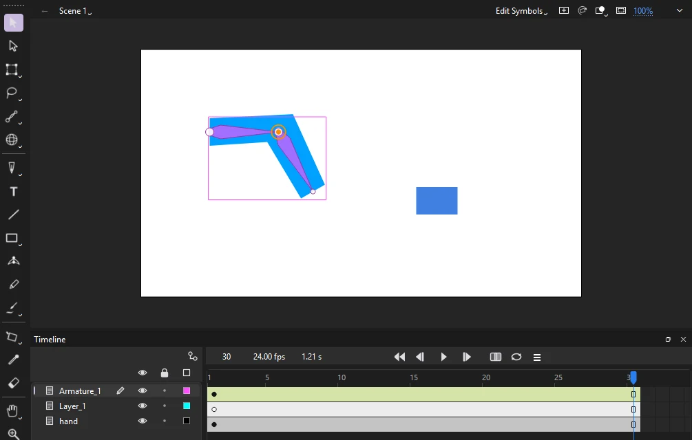
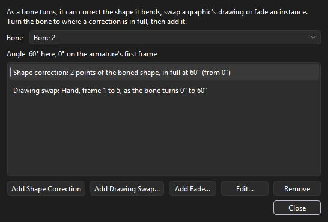

Animation
Bones and inverse kinematics
An armature is a chain of bones inside a shape or between symbols. Drag the end of the chain and the joints bend to follow, which is called inverse kinematics (IK). Build armatures of symbols or bone a shape with the Bone tool, and pose and play them along with the armatures in FLA files.

Building an armature
Use the Bone tool (M) to join symbol instances with bones:
- Drag from a point on one instance to a point on another. The bone runs from where you press to where you let go. Both instances must be on unlocked layers.
- Phoenix puts both instances on a new armature layer, Armature_1, above the first one's layer. Each instance turns about its joint, which becomes its transformation point.
- To grow the armature, drag from any instance already in it to another instance. The new bone starts at that instance's joint, so one instance can branch into several bones. Bones can be added at any time, on any frame of the span: in every other pose the new bone turns with the bone it hangs from. An instance can be in only one armature.
Each bone added is a single step to undo.
Bones inside a shape
The Bone tool also bones a shape, so its outline bends as the bones turn:
- Drag inside a shape, a merged shape or a drawing object, from where the first bone starts to where it ends.
- Phoenix moves the shape to a new armature layer, kept in a library symbol of its own, and binds each of its control points to the nearest bone. A point as near one bone as another, such as one beside the joint between them, follows both.
- To grow the armature, drag from one of its joints. Every point is bound again to its nearest bone.
Binding points with the Bind tool
The Bind tool, in the Bone tool's slot, changes which bones a boned shape's control points follow. It shows the points of every boned shape on the stage: a square for a point that follows one bone, a triangle for one that follows several, and a red outline for one that follows none and so stays where it is.
- Click a bone. The points that follow it turn yellow.
- Click a point to bind it to the bone, as well as to any bones it already follows.
- Shift-click a point to bind it, or to unbind it if it is already bound. Ctrl-click a point to unbind it.
A point bound to several bones follows them evenly. Every frame of the armature is bent again from its first frame by the new binding, and each change is a single step to undo.
Joint limits
Click a bone with the Bone tool, without dragging, to set how far the joint at its head may turn. In the Joint Rotation and Spring dialog, turn on Constrain and give the Min and Max angles, measured from the bone above. When you drag the armature into a pose, a limited joint stops at its limit and the other joints turn further to make up the difference.
Springs
The same dialog gives a bone a spring, for a tail, an antenna, ears or a ponytail that swings on its own. With Spring above None, the bone trails behind as the bones above it move and as its own poses change, swings past and settles back where its pose has it. A low spring swings wide and slow, a high one quick and small; Damping says how quickly the swinging dies away, from 0 (it goes on bouncing) to 100 (it settles at once). Springs move the instances of an armature of symbols, and bend a boned shape where its bones swing, the same every time it plays, on the stage, in Test Movie and in exports. The swing is worked into every frame of the armature when you set a spring or change a pose, so the bones swing too, and a span can end swung past its last pose. FLA files keep springs the same way, so an armature with springs from another app plays as it was saved.
Armature layers
Armatures live on their own layers, and their spans are drawn yellow-green in the timeline. A pose is a keyframe for the whole armature: Phoenix fills in the frames between poses, easing them the way the file says, when you play the document and when you export it. A shape bends from pose to pose, and the instances of a symbol armature turn and move with their joints.
Posing
Bones are drawn in the layer's color as slim shapes with round joints. Then, with the Selection tool:
- Move the playhead to the frame you want to pose.
- Drag a bone. Its tip follows the cursor and the bones above it in the chain bend to reach.
The frame becomes a pose if it wasn't one already, and the frames on either side of it ease into it. Each pose change is a single step to undo.
- Armatures between symbols carry their instances with them on every frame. Posing the first frame of a span moves the instances themselves; posing a later frame moves them only there and in the frames that ease toward it.
- Boned shapes bend the points of the shape, each with the bones it is bound to.
- Springs swing the bones on top of their poses: a boned shape bends where its sprung bones swing, and an armature of symbols carries its instances with them (see Springs). Dragging a bone poses it from where it shows, swing and all.
Pose commands
Right-click a frame of an armature layer, or use , to work with poses directly:
- Insert Pose
- Makes the armature's look on that frame a pose, without moving it, so you can then change the motion from there.
- Copy Pose
- Remembers the armature's pose on that frame, whether or not a pose is there.
- Paste Pose
- Poses the armature on that frame as the copied pose, adding a pose there if there was none. It pastes onto an armature with the same bones, in the same document or another.
- Clear Pose
- Takes away the pose on that frame, so the armature tweens straight from the pose before to the pose after. The first pose stays.
Each is one step to undo; boned shapes bend and symbol instances move as they do when you pose by dragging.
Bone corrections
A bone can do more than bend its art. As it turns, it can correct the shape it bends, swap a graphic's drawing or fade an instance: an elbow keeps a clean crease and the arm bulges as it bends, a hand turns through its drawings as the wrist turns, a head turns through its drawings as one bone turns.

Each correction blends in between two angles of its bone. At the first angle nothing changes, at the second the correction is in full, and in between it is part way. A bone's angle is how far it is turned from the bone above it, or, for the bone at the top of the armature, how far it is turned itself. A bone that drives something has an orange ring where it turns.
Correcting a boned shape
- With the Selection tool, turn the bone to where the correction should be in full, for example the arm bent all the way.
- Click the bone with the Bone tool and click Corrections... in the Joint Rotation and Spring dialog. Or right-click a frame of the armature layer and choose and pick the bone.
- Click Add Shape Correction. The boned shape opens in place on the frame you are on.
- Move the shape's points with the Subselection tool until it looks right at this angle.
- Leave the symbol, by double-clicking outside it or clicking the scene's name above the stage. What you drew is kept as the correction.
Now the shape blends from its plain bend at the bone's resting angle to what you drew at the angle you drew it. The moved points turn with their bones, so the correction stays in place when the whole arm turns at the shoulder too. Everything you did while drawing is one step to undo.
Only move points: points added or taken away while drawing mean the correction is not kept. To draw a correction again, add it again at any angle; the new one takes the old one's place. Each bone can correct the shape once, and corrections from several bones add up.
Swapping drawings and fading
For a hand or a head that turns, draw each view on its own frame of a graphic symbol and place the graphic on the armature's timeline. Then, in the Bone Corrections dialog, click Add Drawing Swap..., pick the graphic, give the bone's two angles and the frame to show at each. The frames between show in turn as the bone turns, whatever the graphic's own looping. Add Fade... fades any symbol instance between two alphas the same way.
A bone used only as a handle, such as a head-turn control that bends no art, works the same way. Join two small symbol instances off the side of the stage into an armature of their own, or add a bone to a boned shape and unbind its points with the Bind tool, then pose that bone to drive the drawings.

The dialog lists what the chosen bone drives. Edit... changes a correction's angles, frames or alphas, and Remove takes it away. Each change is one step to undo.
Saving and exporting
Corrections are kept in the file as Phoenix's own settings, so FLA and XFL files keep them; another FLA editor shows the art without them. They play on the stage, in Test Movie and in exported images and movies. Publishing HTML5, exporting an SWF movie and draw them in: each frame of a boned shape is corrected, and a swapped or faded instance shows a new graphic symbol keyed frame by frame, so the copy plays the same anywhere.
Asset Warp
Asset Warp puppets, where artwork bends around pins, are drawn deformed by their pins, vector and bitmap art alike. A turned pin turns the art right round it, a frozen pin keeps the art round it at its own angle, and a bone between two pins keeps the art along it on the line between them.
Asset Warp tool
Use the Asset Warp tool (Shift+W) to make a puppet and bend it by its pins:
- Click a shape, a bitmap, a group or a graphic symbol instance to make it a puppet, with the first pin where you clicked. Its art goes into a graphic symbol (WarpedAsset_1) inside a puppet symbol (PuppetShape_1), both in the library, and the puppet takes its place. Movie clips and buttons cannot be warped.
- Click the puppet to show its pins. A click on the art where there is no pin adds one there.
- Drag a pin. The art bends around the other pins, which hold their places.
- Shift-drag a pin to turn it, and the art right round it, without moving it. A turned pin shows a tick the way it turned.
- Click a pin and press F to freeze it, or again to let it go: the art round a frozen pin keeps its angle while the pins about it move. A frozen pin is square.
- Click a pin, then Ctrl-click another to join them with a bone, or to take away the bone between them. The art along a bone stays on the line between its pins, like a stiff limb.
- Alt-click a pin, or click it and press Delete, to take it away.
Making a puppet, and each pin change, is a single step to undo. Pins are kept on each keyframe's instance, so a classic tween between two keyframes bends the art from one set of pins to the other. To bend art by handles without making it a puppet, use a deformer.
All armature and warp data is kept when you save, so saved FLA files keep them intact.
A rigging layer.